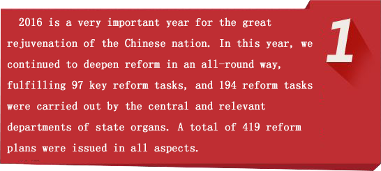
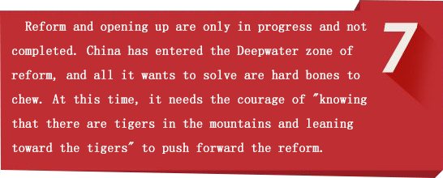

On December 30, 2013, the CPC Central Committee's comprehensive reform leading group was announced. Over the past two
years, the central leadership group for deepening reform has earnestly fulfilled its responsibilities of "overall
design, overall coordination, overall promotion, and supervision and implementation", holding 19 meetings
The overall goal of comprehensively deepening reform is to improve
and develop the socialist system with Chinese characteristics and to advance the modernization of the country's governance
system and governance capabilities. It is not advancing reform in one area, nor in several areas, but involves reform
in all areas of economy, politics, culture, society, ecological civilization, national defense and the armed forces,
and opening up to foreign countries. It is not a matter of one or more sectors alone, but of coordination. To realize
the comprehensive deepening of reform, we need to further emancipate our minds, rely on the people
Illustrating Xi Jinping's opinions comprehensively deepening reform

Reform is a powerful driving force for development and a key measure to determine the destiny of contemporary China. Since the 18th National Congress of the CPC, the CPC Central Committee, with Comrade Xi Jinping as the core, has pushed forward the comprehensive and deepening reform, and the main framework of the reform has been basically established. General Secretary Xi Jinping has made many important remarks on deepening the reform in an all-round way. Here are ten drawings to learn from.
- 
-

- 
Focus on social hot issues
Household registration reform
Accelerating the reform of household registration system is a key reform deployed at the 18th National Congress and the Third Plenary Session of the 18th Central Committee of the CPC. It is a major task to promote the new urbanization with Chinese characteristics and a major measure to realize the dream of hundreds of millions of agricultural migrants. The reform of the household registration system and the reform of related fields will be coordinated and coordinated, involving a wide range of personnel and efforts, will be unprecedented.
Accelerating the reform of household registration system is indeed a hard nut to crack. We are confident that under the strong leadership of the Party Central Committee and the State Council, we will rely closely on the Party committees and governments at all levels, work together with relevant departments to overcome difficulties and solve difficult reform problems and achieve reform goals in practice.
Although the integration of commercial insurance into the social security system has a long way to go, but the "Zhanjiang model" has taken the first step with demonstrative effect. This new cooperative mode of "unified policy, unified accounting, unified management" is of great significance to the improvement of the social basic medical insurance system.
Household registration reform continues to deepen: delimit "red line", refuse "water", and fall down.
In February 2017, the Ministry of Public Security held a special video training meeting on the reform of the household registration system. The meeting reported the achievements made in the reform of the household registration system, and made a prospect for the next step. Up to now, all provinces, autonomous regions and municipalities have studied and formulated suggestions on the implementation of the reform of the household registration system, and 25 provinces, autonomous regions and municipalities have issued Measures for the implementation of residential certification. In 2016, the urbanization rate of the registered population in China reached 41.2%. Since the implementation of the "three systems" of resident identity cards, more than 5 million resident identity cards have been issued to other places. In 2016, another 1.435 million non-registered persons have registered as registered residents.
The current household registration reform has entered a "new historical stage". Reform has entered a deep-water area and a critical period. How to overcome difficulties and overcome difficulties, fully implement the good policies given by the central government, and further translate them into practical results benefiting hundreds of millions of people through local governments, this meeting also revealed a new signal - draw a "red line", refuse "water", can be settled.
In settling down, the bonus is lifted for some specific population. For example, the graduates of colleges and universities such as netizens, as well as technical workers, Vocational College graduates, returnees from abroad, in addition to a very small number of mega-cities, they should be completely liberalized. It is also necessary to further tilt the key groups, such as the population of rural students entering schools and joining the army, the population of agricultural migrants who have been employed and resided in cities for more than five years, and the whole family migration, as well as the new generation of migrant workers, so as to make every effort to achieve the end.
On the system of setting up integral settlements, we should strictly follow the central policy to establish a sound, scientific and reasonable set of points, more benefits to ordinary workers. In particular, the meeting mentioned that cities with a permanent population of less than 3 million in urban areas should not implement the system of integral settlements, and those groups whose policies have made it clear that they can settle directly should not be included in the scope of the policy of integral settlements. While strictly controlling the total population of megacities and megacities, we should, in accordance with the needs of urban economic and social development, guide the population to move in and out, optimize the structural layout, and further increase the proportion of the registered population.
Good policies need to be resolutely implemented. In the process of landing, the attitude of seeking truth from facts and preciseness is not less. We should sort out relevant policies in an all-round way, promote reform on the basis of voluntary, classified and orderly principles, resolutely eliminate and correct those who do not meet the requirements of the Central Committee, do not make false reports and leave no "moisture", and strive to provide convenient, high-quality and efficient services to the masses so that everyone can settle down happily.